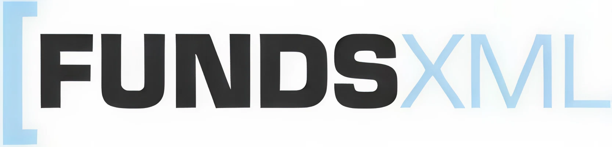

It is the last business day of the month. At the fictional — but entirely representative — Europa Growth Fund, a mid-sized UCITS equity fund domiciled in Luxembourg and distributed across eleven European countries, the monthly reporting cycle has just begun.
By 7:00 a.m. CET, the fund accounting system at the administrator has produced a provisional Net Asset Value. By 9:30 a.m., the portfolio management system at the asset manager has reconciled its shadow NAV against the official one. By 10:00 a.m., twenty-three downstream systems — ranging from the depositary's oversight platform to a data vendor's classification engine, from three regulators' reporting portals to eleven distributors' fact-sheet databases — expect a fresh delivery of fund data in their preferred format.
The operations team at the Europa Growth Fund knows this moment well. One distributor wants a proprietary CSV file with forty-seven columns in a specific German locale. Another insists on an Excel workbook with macros. A third accepts only a SWIFT MT535 message for holdings. A fourth has recently migrated to an in-house XML schema that — despite its name — bears little resemblance to any public standard. The German regulator needs a PRIIPs KID, the French regulator a DICI, the Austrian distributor an EMT file, and the Italian insurer a Tripartite Template for Solvency II. The ESG team in Paris is meanwhile waiting for an EET so that Article 8 disclosures can be updated on the fund's website by noon.
Every one of these deliveries contains, at its heart, the same underlying data: one fund, three share classes, one portfolio, one NAV, one set of costs, one set of risks. Yet the operations team maintains more than thirty bilateral interfaces to ship this same information into thirty different shapes. When a single field changes — a new ISIN is added, a benchmark is renamed, a cost component is reclassified — thirty mappings must be touched, thirty test cycles must be run, thirty sign-offs must be collected.
This chapter is about why that reality exists, what it costs, and what the fund industry has been trying to do about it. It is the motivational chapter of this book. No XML syntax appears in these pages; the technology begins in Chapter 2. Here, we build the case for a standard — and, ultimately, for FundsXML — by looking honestly at the data landscape that fund professionals navigate every day.
By the end of the chapter, you should be able to:
To appreciate the data problem, it helps to appreciate the scale of the industry that produces it.
At the time of writing, European investment funds manage assets of roughly twenty trillion euros, split approximately two-thirds into UCITS (retail-oriented, passportable across the European Union) and one-third into AIFs (alternative investment funds, from hedge funds and private equity to real estate and infrastructure vehicles). Europe hosts more than sixty thousand individual funds and sub-funds; if one counts share classes separately, the figure comfortably exceeds two hundred thousand distinct investable units, each with its own ISIN.
Luxembourg and Ireland together domicile the majority of cross-border UCITS. France, Germany, the United Kingdom, Switzerland, and the Netherlands host large domestic markets in addition. Cross-border distribution — a UCITS sold in a country other than its country of domicile — is the norm rather than the exception, and each new distribution country typically adds its own reporting quirks.
The numerical profile of daily data traffic is sobering:
Behind these numbers sits a simple observation: the European fund industry has become an information-processing industry. The cost of producing, distributing, reconciling, and reporting fund data is no longer a rounding error in the total expense ratio — it is a material component of the operating cost base of every asset manager, every administrator, every distributor, and every regulator. Standardisation is therefore not a purely technical concern; it is an industrial-economics concern.
The remainder of this chapter unpacks that observation in four steps. First, we classify the data itself. Second, we identify the actors that exchange it. Third, we examine what goes wrong when that exchange happens without a shared standard. Fourth, we survey the standards that have emerged in response — culminating in the positioning of FundsXML within that landscape.
Fund data can be organised along many dimensions: by lifecycle (static versus dynamic), by sensitivity (public versus confidential), by origin (produced internally versus sourced externally). For the purposes of this book, we adopt a pragmatic four-part taxonomy that mirrors how FundsXML itself is structured and how most practitioners think about their day-to-day work:
Each category has its own frequency, its own sources, its own consumers, and its own pathologies. We look at them in turn, with the Europa Growth Fund as a running example.
Master data is the "identity layer" of the fund industry. It answers the questions what is this fund, what is this share class, what is this instrument. Typical master-data elements include:
For the Europa Growth Fund, the master data fits on a handful of pages. Yet those pages are the most-consulted and most-duplicated information in the entire system landscape. Every downstream consumer — from a fact-sheet engine to a distribution platform to a ratings provider — needs a copy. Every consumer holds that copy in its own schema, subject to its own update cadence.
Master data changes rarely — perhaps a few dozen events per year for a typical fund. But when it does change, the ripple effects are enormous: a renamed benchmark, a new share class, a fee reduction, a change of depositary. Each such event must be propagated to every downstream copy, and each missed update is a latent reconciliation break.
The characteristic failure mode of master data is silent divergence: two systems hold "the same" fund under two slightly different names, two slightly different fee structures, two slightly different inception dates — and nobody notices until an auditor or a regulator asks a question that depends on precisely the field that has drifted.
Price data is the most visible output of a fund. The NAV per share is the number investors see on their statements, the number published on websites, the number used to calculate performance fees, the number that drives subscription and redemption proceeds. For a daily-priced UCITS, the NAV is produced every business day after market close, validated overnight, and released the next morning.
Price data has several subtypes:
Compared with master data, price data is high-volume and highly time-sensitive. A delayed NAV delays every downstream process that depends on it, from the publication of daily prices on Morningstar to the valuation of a feeder fund that holds the Europa Growth Fund as a position.
The characteristic failure mode of price data is format fragmentation. The NAV itself is a single decimal number, but the way it travels differs: one distributor takes a CSV file named NAV_YYYYMMDD.csv, another a SWIFT MT535 with an embedded price block, another a proprietary JSON endpoint, another an emailed Excel sheet. Multiply by share classes and currencies and the number of outbound NAV feeds for a mid-sized fund house easily exceeds one hundred per day.
Portfolio data describes, at a specific valuation point, everything a fund holds: securities, cash, derivatives, other funds, real assets, receivables, and payables. A single portfolio snapshot for the Europa Growth Fund might contain:
Each position has its own descriptive fields — identifier, description, quantity, price, market value, weight, currency, country of risk, sector, credit rating, maturity — and each consumer of the portfolio has its own requirements about which of those fields must be present, in what precision, and in which reference currency.
Portfolio data feeds:
The characteristic failure mode of portfolio data is semantic ambiguity. The phrase "market value" has half a dozen legitimate interpretations (clean vs. dirty price for bonds, pre- vs. post-accrual, including vs. excluding cash). The phrase "country" may mean country of incorporation, country of tax residence, country of risk, or country of the primary listing. Without a shared glossary — and without a schema that forces the producer to declare which variant is intended — each consumer is free to guess, and guesses diverge.
Transactions are the events that change a fund's holdings or its capital base. They come in two broad flavours:
Each transaction has a richer event-like structure than a static position: it has a trade date, a value date, a settlement date, a counterparty, a price, a commission, a tax, and — crucially — a state (pending, matched, settled, failed, cancelled). Over the life of a single order, multiple transaction records may be produced as the state evolves.
For the Europa Growth Fund, transaction data flows in two directions. Outbound transactions leave the portfolio management system for the administrator, the depositary, the brokers, and the clearing system. Inbound transactions arrive from the transfer agent (as share-class subscriptions and redemptions), from the custodian (as settlement confirmations), and from data vendors (as corporate-action notifications).
The characteristic failure mode of transaction data is mismatched state: two systems agree that a trade happened, but disagree about whether it is settled, whether the tax was withheld, or whether a corporate action has been applied. Reconciliation teams at asset managers spend a significant portion of their working day chasing exactly these mismatches.
Table 1.1 summarises the four categories along the dimensions most relevant for data-exchange design.
Table 1.1 — The four categories of fund data
| Category | Typical frequency | Primary producer | Primary consumers | Dominant pain point |
|---|---|---|---|---|
| Master data | Rare events (days/weeks) | Asset manager / administrator | Distributors, vendors, regulators, website | Silent divergence between copies |
| Price data | Daily (intra-day for ETFs) | Administrator | Distributors, vendors, platforms, investors | Format fragmentation per channel |
| Portfolio data | Daily internal / monthly public | Administrator / portfolio manager | Risk, compliance, regulators, transparency feeds | Semantic ambiguity of fields |
| Transaction data | Continuous (event-driven) | Portfolio manager, transfer agent, custodian | Reconciliation, accounting, regulators | Mismatched state across systems |
The insight to carry forward is that a single standard must accommodate all four categories if it is to meaningfully reduce the bilateral-mapping problem. A standard that covers only master data leaves the NAV and portfolio flows untouched; a standard that covers only transactions does nothing for the fact-sheet engine. The ambition of FundsXML — as we will see in Chapter 3 — is precisely to provide a single model that can express all four.
If the data taxonomy is the what, the actor landscape is the who. A realistic picture of that landscape is the first step towards understanding why bilateral mappings multiply so quickly.
Around any European investment fund, one finds — at a minimum — the following roles:
Figure 1.1 sketches the data-flow network of the Europa Growth Fund. The fund sits at the centre; around it are the actors just listed; between them run the arrows that represent data flows.
Figure 1.1 — Data flows around the Europa Growth Fund
(A full-page diagram placed here in the final book. The diagram shows the Europa Growth Fund at the centre, surrounded by the asset manager, administrator, depositary, transfer agent, distributors, data vendors, regulators, and internal consumers. Arrows are colour-coded by data category — master, price, portfolio, transaction — and labelled with typical frequencies.)
Even for a single mid-sized fund, the diagram has more than twenty arrows. For a fund house running a hundred funds, the number of bilateral flows runs into the thousands. It is this combinatorial explosion — not the volume of any single flow — that makes unstandardised data exchange so expensive.
To make the picture concrete, consider three complete flows that together account for much of the daily traffic around the Europa Growth Fund.
Flow 1 — Daily NAV publication. At 18:00 CET, the administrator's fund-accounting system strikes the books. By 22:00, after overnight pricing feeds have been applied and the depositary has performed its cash-monitoring checks, a draft NAV is available. By 07:00 the next morning, the asset manager's oversight team reviews the NAV against its shadow calculation. On release, the NAV must be delivered to: the asset manager's website, the administrator's own transparency portal, Bloomberg, Refinitiv, Morningstar, three regional data vendors, eleven distributors, and two fund-of-funds that hold the Europa Growth Fund as a position. Each of these recipients expects the NAV in its preferred format.
Flow 2 — PRIIPs KID generation and distribution. Every twelve months, and whenever market conditions materially change, a Key Information Document must be produced for each share class of the Europa Growth Fund. The KID contains risk indicators, cost disclosures, and performance scenarios — all of which depend on portfolio data, price history, and cost data. Once generated, the KID PDF must be pushed to every distributor in every country where the fund is sold, in the local language, with version tracking that allows investors to retrieve the exact KID in effect on the day they subscribed. The data feeding the KID is the same data feeding half a dozen other reports; the delivery mechanism is entirely different.
Flow 3 — MiFID II cost and target-market reporting. Under MiFID II, distributors must receive, for every share class they sell, a European MiFID Template (EMT) detailing target market, costs, and charges. The EMT is refreshed monthly or quarterly and whenever the underlying data changes. It is distributed via a mix of FinDatEx channels, data-vendor repositories, and direct bilateral feeds. For a fund sold in eleven countries through a hundred distributors, dozens of EMT deliveries per month are not unusual.
The point of walking through these three flows is to emphasise that the same underlying dataset feeds very different outbound products — and that the effort of producing those outbound products, in the absence of a standard, scales linearly with the number of downstream formats rather than with the complexity of the data itself.
Having mapped the data and the actors, we now turn to the recurring pathologies that afflict unstandardised data exchange. Each of the six pathologies below is common enough that every experienced fund-operations professional will recognise it. For each, we offer a short description, a concrete illustration from the Europa Growth Fund, and a sense of the cost it imposes.
The most immediate symptom of missing standardisation is the proliferation of bilateral, proprietary formats. When n parties need to exchange data and no shared format exists, the number of distinct mappings required scales as n × (n − 1), i.e. roughly as the square of the number of participants. A network of ten counterparties requires ninety mappings; one hundred counterparties, roughly ten thousand.
At the Europa Growth Fund, the outbound NAV feed illustrates the problem in miniature. Thirteen distributors receive the daily NAV:
None of these formats is inherently wrong. Each was rational at the time it was chosen. But collectively, they mean that a change to the NAV payload — for example, adding a hedged-currency NAV for a new share class — triggers thirteen distinct change requests, thirteen distinct test cycles, and thirteen distinct go-live windows. The marginal cost of adding the fourteenth distributor is not the cost of understanding one more format; it is the cost of adding yet another line to an already-sprawling maintenance matrix.
A shared standard collapses n × (n − 1) into something closer to n: each participant implements the standard once, and bilateral mappings disappear. This is the single most important economic argument for standardisation — and it is, in microcosm, the argument for FundsXML.
A fund or instrument rarely has just one identifier. It may have an ISIN (international), a WKN (German market), a Valor (Swiss market), a SEDOL (UK market), a Bloomberg ticker, a RIC (Refinitiv Instrument Code), a CUSIP (for North-American assets), an in-house code, and a legacy identifier inherited from a pre-merger system. Each system in the chain privileges one of these identifiers as primary and treats the others as aliases — if it tracks them at all.
At the Europa Growth Fund, a recurring incident pattern involves corporate actions on small-cap holdings. The custodian reports the event using the ISIN of the new security; the portfolio management system stores positions under WKN; the risk system uses an in-house code that maps to the pre-event ISIN. For three days after the event, reports from the three systems disagree, and the reconciliation team must manually trace the event through each identifier.
A common standard does not, by itself, eliminate the existence of multiple identifiers — the world has many identifiers for good reasons. But a standard can specify how multiple identifiers are carried together on the same record, and which is authoritative, so that the consumer need not guess. FundsXML makes this explicit through its Identifiers and OtherIDs structures, as we will see in Chapter 5.
Two systems may use the same field name for subtly different concepts. A few examples:
At the Europa Growth Fund, an illustrative case involves the ESG team's monthly report. The team reports carbon intensity using country of risk; the marketing team's fact-sheet engine reports country allocation using country of incorporation; a third-party research provider uses country of listing. All three numbers end up on the fund's website, and none of them matches. An internal audit eventually determines that all three are technically correct — they just answer different questions. But investors and sales staff, unaware of the distinction, spend weeks trying to reconcile what cannot be reconciled.
A standard addresses semantic inconsistency through two mechanisms: a typed schema that constrains what a field can contain, and a shared glossary that defines what each field means. FundsXML provides both, and the habit of consulting the schema definition before using a field is perhaps the most important discipline a fund-data practitioner can acquire.
Every format evolves. A new regulatory requirement adds a field; a deprecated field is removed; a type is tightened; an enumeration gains new values. In an unstandardised environment, each bilateral format evolves independently, on its own schedule, with its own change-notification mechanism — if any.
At the Europa Growth Fund, the operations team has a wall-chart that tracks the effective version of each outbound format by counterparty. The chart has over sixty rows. When a counterparty announces a format change, the team must plan a migration window, produce parallel outputs during the transition, and coordinate cut-over with the receiver — all while maintaining the other fifty-nine flows unchanged. Mistakes manifest as delivery failures at precisely the moment no one can afford them: the month-end cycle.
A shared standard does not eliminate versioning — FundsXML itself has evolved from 1.0 to 4.2.x over more than two decades — but it concentrates the versioning discussion into a single conversation that all participants can follow, rather than hundreds of bilateral negotiations.
The preceding four pathologies all share a common consequence: they move work from machines, which are cheap, to humans, who are expensive, slow, and error-prone. Every field that cannot be parsed automatically must be read by someone. Every reconciliation break must be investigated by someone. Every format migration must be project-managed by someone.
Industry benchmarks vary, but it is not unusual for a mid-sized fund house to estimate the fully-loaded cost of a single bilateral feed interface at tens of thousands of euros per year for maintenance alone, exclusive of the original build cost. For a fund house with five hundred active interfaces, the annual cost of not being standardised runs into the millions. This cost is invisible on any single balance sheet line, because it is spread across operations, IT, change management, and vendor contracts — but it is very real, and it is ultimately borne by the end investor in the form of management fees.
Beyond cost, there is risk. Every manual touch is an opportunity for error. Every reconciliation break, if missed, can turn into a pricing error, a regulatory finding, or a reputational incident. The fund industry has learned, through painful experience, that operational risk is not a separate category of risk; it is a first-class risk that can easily exceed market risk for some activities.
Pulling the five pathologies together yields a simple conclusion: the cost of not standardising is not zero, and it is not constant. It grows non-linearly with the number of participants, the number of formats, and the pace of regulatory change. For decades, the industry tolerated this cost because each individual participant perceived its own share as manageable. In the past decade, three things have changed:
Standardisation, in other words, used to be a nice-to-have. It is now an economic necessity. The question is no longer whether to standardise, but which standard, applied to which part of the flow. The rest of this chapter turns to that question.
If one had to pick a single reason why FundsXML — and standardisation in general — has moved from the periphery to the centre of fund operations in the past decade, it would be regulation. Voluntary industry coordination, historically, has been slow; regulatory deadlines have not.
European fund regulation is dense. The list below is not exhaustive, but it covers the regulations that most directly drive data-exchange requirements:
Each of these regulations translates into concrete data requirements. Table 1.2 maps a selection of regulations onto the data categories they most directly affect and onto the FundsXML module that expresses them — a forward reference to Chapter 8, where the regulatory modules are treated in depth.
Table 1.2 — Regulation to FundsXML module
| Regulation | Primary data required | FundsXML touchpoint |
|---|---|---|
| MiFID II (target market, costs) | Share-class master data, costs, target-market classification | EMT within RegulatoryReportings |
| PRIIPs KID | Risk indicator, cost table, performance scenarios, historical NAVs | EPT within RegulatoryReportings |
| SFDR / EU Taxonomy | ESG product classification, PAI indicators, taxonomy alignment | EET within RegulatoryReportings |
| Solvency II look-through | Full portfolio, issuer ratings, country of risk, durations | TPT within RegulatoryReportings |
| AIFMD Annex IV | Portfolio, leverage, liquidity, counterparty exposures | Portfolio + CustomDataFields |
| UCITS / MMFR disclosures | NAV, portfolio composition, liquidity buckets | FundDynamicData + Portfolio |
| ESAP | Consolidated public fund disclosures | Documents + regulatory modules |
The practical consequence of this mapping is important: regulators, although they do not mandate FundsXML directly, increasingly mandate the data that FundsXML is designed to carry. The path of least resistance for most fund houses is to produce a single canonical FundsXML representation of their regulatory data and transform it into whatever filing format the regulator actually accepts. The canonical representation is what makes the regulatory workload manageable in the first place.
Ten years ago, a mid-sized fund house might have had one major regulatory data project per year. Today, it is rarely fewer than three concurrently: a PRIIPs refinement, an SFDR amendment, a MiFID II review, a Solvency II look-through change, a DORA implementation. The regulatory roadmap for the remainder of this decade shows no sign of slowing, and the direction of travel is unmistakable: more fields, more frequently, more comparably, more publicly.
Against that backdrop, the argument for a stable, well-governed, schema-based standard is no longer intellectual. It is operational. A fund house that enters each new regulatory project with a canonical data model already in place pays the fixed cost once; a fund house that treats each project as a bespoke initiative pays the fixed cost again and again.
FundsXML is not alone. Several standards — some older, some newer, some complementary, some competing — populate the European fund data landscape. A practitioner reading this book should be able to place each of them on a mental map. This section provides that map.
The Financial Information eXchange (FIX) protocol was born in 1992 out of a bilateral effort between Fidelity Investments and Salomon Brothers to standardise equity-trade communications. Today, FIX is the dominant protocol for electronic order entry and trade execution in equity, derivatives, and increasingly fixed-income markets. Every sell-side trading desk speaks FIX; every order management system on the buy side speaks FIX; every execution venue exposes a FIX gateway.
FIX is a session-oriented, message-oriented protocol, optimised for low-latency, high-volume order flow. Its data model is centred on orders and executions, not on funds. It does not attempt to describe a fund's master data, its NAV, or its regulatory disclosures. It is, in the taxonomy of Section 1.3, primarily a transaction-data standard — and within transactions, primarily investment transactions rather than capital transactions.
FIX is therefore complementary to FundsXML, not competing. A fund's portfolio manager uses FIX to send orders to brokers; the resulting executions feed the portfolio that FundsXML then describes.
SWIFT (Society for Worldwide Interbank Financial Telecommunication) operates the global messaging network that underpins interbank payments, securities settlement, trade finance, and treasury. Its legacy MT message series — MT5xx for securities — has been the backbone of cross-border custody and settlement for decades. MT535 carries statements of holdings; MT536 carries statements of transactions; MT540–MT548 carry settlement instructions and confirmations.
SWIFT is migrating its messages to MX, the XML-based successor built on ISO 20022. The migration is well underway for payments and is progressing, more slowly, for securities.
For the fund industry, SWIFT is the dominant channel between funds and their custodians and depositaries. It handles holdings statements, settlement confirmations, income events, and corporate-action notifications. Like FIX, SWIFT is complementary to FundsXML: it covers a specific segment of the flow — the custody and settlement leg — that FundsXML does not attempt to address directly. A typical operational architecture consumes SWIFT messages from the custodian, translates them into internal representations, and re-emits the resulting fund data in FundsXML for onward distribution.
ISO 20022 is the international standard for financial-industry messaging. Unlike FIX, SWIFT MT, or FundsXML, ISO 20022 is not a single message format; it is a methodology — a metamodel and a repository of business components — from which concrete messages in many domains are derived. Payments, securities, cards, foreign exchange, trade services, and increasingly investment funds all have ISO 20022 message sets.
For investment funds, ISO 20022 defines message families such as setr (order processing), semt (statements), sese (settlement), and reda (reference data). These messages overlap in scope with FIX, SWIFT MT, and — in the master-data and price areas — with FundsXML.
The relationship between ISO 20022 and FundsXML is subtle. ISO 20022 is a broad, cross-industry, cross-domain framework governed by a formal ISO process; its governance is heavyweight and its release cycles are long. FundsXML is a focused, fund-industry-specific standard that can iterate faster and cover fund-specific concepts — regulatory templates, FinDatEx embedding, multi-lingual fact-sheet text — that an ISO 20022 message would struggle to represent natively. The two standards are best thought of as operating at different levels of abstraction: ISO 20022 dominates interbank and custody flows; FundsXML dominates fund-product-centric flows. They coexist, and well-architected systems translate between them at the boundary.
openfunds is a lightweight, community-driven initiative originating in Switzerland that defines a standardised vocabulary of fund master-data fields. Rather than prescribing a message format, openfunds publishes a catalogue of approximately five hundred field definitions — each with a stable identifier, a clear definition, a type, and guidance on usage. The catalogue has been widely adopted by Swiss and German market participants for the exchange of fund reference data.
openfunds answers the semantic-inconsistency problem of Section 1.5.3 for master data: when two parties agree to use openfunds field OFST005010 for a benchmark name, they agree on what the field means. openfunds does not, however, prescribe how that field should be carried on the wire — whether as CSV, JSON, Excel, or XML — nor does it cover portfolios, transactions, or regulatory reporting.
openfunds is therefore complementary to FundsXML in theory and, in practice, has strongly influenced the master-data portions of the FundsXML schema. Many openfunds fields map directly to FundsXML elements, and a common pattern is to use openfunds identifiers as the authoritative semantic reference while using FundsXML as the transport and structural container.
FundsXML is the subject of this book. In one sentence: FundsXML is a comprehensive, schema-based XML standard for the exchange of fund-centric data — master data, price data, portfolio data, transactions, and regulatory reporting — governed by an industry initiative and maintained as an open standard.
Its defining characteristics, each of which we will revisit in depth in later chapters, are:
CustomDataFields mechanism allows proprietary extensions without breaking schema compatibility.Table 1.3 places the five standards side by side along four dimensions: scope, message type, governance model, and depth of adoption in the European fund industry.
Table 1.3 — A comparative map of fund-industry standards
| Standard | Primary scope | Message type | Governance | European fund adoption |
|---|---|---|---|---|
| FIX | Order entry, execution | Session-based, tag/value | FIX Trading Community | Ubiquitous for trading |
| SWIFT MT/MX | Custody, settlement, payments | Store-and-forward messages | SWIFT cooperative | Ubiquitous for custody |
| ISO 20022 | Cross-industry financial messaging | XML messages from a metamodel | ISO / RMG | Growing, heterogeneous |
| openfunds | Master-data vocabulary | Field catalogue (format-agnostic) | openfunds association | Strong in DACH region |
| FundsXML | Fund product data end-to-end | Schema-based XML documents | FundsXML initiative | Strong and growing, especially for regulatory flows |
The map highlights that FundsXML occupies a distinct and largely uncontested niche: the end-to-end description of a fund product — its identity, its dynamics, its holdings, its regulatory disclosures — as a single validated document. The other standards are not displaced; they continue to dominate their respective niches. A realistic operational architecture uses several of them together: FIX to the brokers, SWIFT to the custodian, openfunds as a semantic reference, FundsXML as the outbound distribution and regulatory medium.
The preceding sections have built, step by step, the case for a standard that:
FundsXML is the standard that most completely satisfies these criteria for the European fund industry today. It is not the only answer to any single question; but it is the only standard that attempts to answer all of the questions together. Its closest conceptual neighbour, ISO 20022, is broader but less fund-specific and slower to evolve. Its closest semantic neighbour, openfunds, is sharper on master-data definitions but does not prescribe a transport structure. Its closest transactional neighbours, FIX and SWIFT, do not attempt to describe a fund product at all.
Viewed in this landscape, the choice for a fund-industry practitioner is not usually FundsXML versus something else, but rather FundsXML together with the right neighbours — with FIX or equivalent at the trading interface, SWIFT or ISO 20022 at the custody interface, openfunds as a shared dictionary, and FundsXML as the canonical fund-product representation that feeds distributors, regulators, and transparency channels.
For the Europa Growth Fund, the implication is concrete. By adopting FundsXML as the canonical internal model for fund-product data, the operations team can:
None of this happens overnight, and Chapter 13 devotes itself to the project mechanics of getting from today to that future state. But the destination is worth naming now, at the start of the book, so that every subsequent chapter can be read with a clear picture of what it contributes.